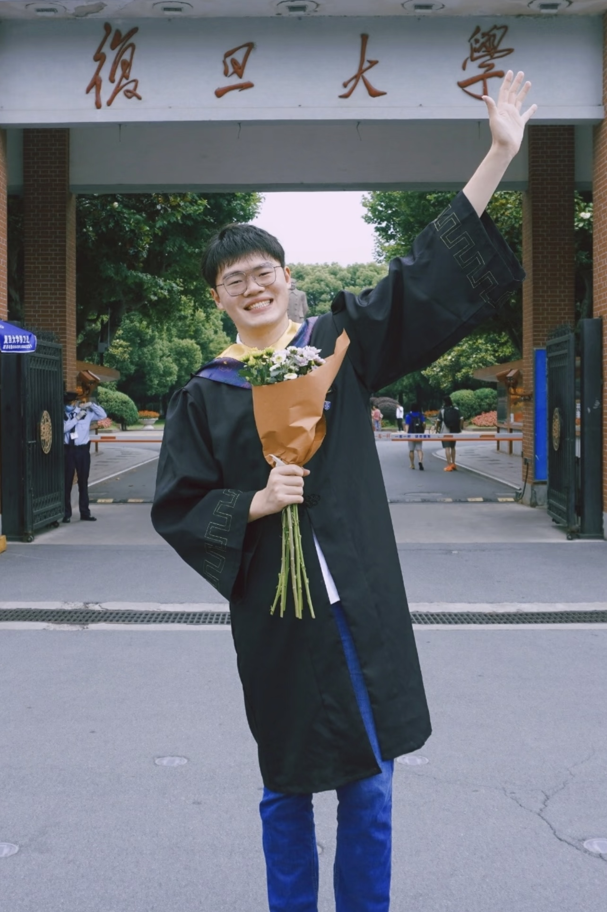

Xiaoyi Wei「魏潇逸」
Hello there! I am a PhD student in College of Intelligent Robotics and Advanced Manufacturing at Fudan University, advised by Prof. Lihua Zhang .
I received my bachelor's degree from Intelligent Science and Technology at Fudan University.
My research interests include whole-body control , reinforcement learning , and loco-manipulation .
If you are interested in any of these topics, or would simply like to chat, feel free to contact me :)
Email
/
Google Scholar
/
GitHub
/
CV

Selected Publications
* denotes equal contribution.
KiRAS: Keyframe Guided Self-Imitation for Robust and Adaptive Skill Learning in Quadruped Robots
Xiaoyi Wei , Peng Zhai, Jiaxin Tu, Yueqi Zhang, Yuqi Li, Zonghao Zhang, Hu Zhou, Lihua Zhang
International Conference on Robotics and Automation (ICRA), 2026
[Project Page]
[Paper]
[Video]
KiRAS uses single-keyframe guided self-imitation to represent multiple quadruped skills within one policy, enabling robust and adaptive terrain traversal.
Continuous Control of Diverse Skills in Quadruped Robots Without Complete Expert Datasets
Xiaoyi Wei* , Yueqi Zhang, Taixian Hou, Xiaofei Gao, Zhiyan Dong, Peng Zhai, Lihua Zhang
International Conference on Robotics and Automation (ICRA), 2025
[Paper]
[Video]
[BibTeX]
This work applies GASIL to quadruped skill learning, represents each skill with a single keyframe, and enables an 8-DoF robot to learn bipedal walking and locomotion at different base heights.
Robust Proximal Adversarial Reinforcement Learning Under Model Mismatch
Xiaoyi Wei , Taixian Hou, Xiaopeng Ji, Zhiyan Dong, Jiafu Yi, Lihua Zhang
IEEE Robotics and Automation Letters (RA-L), 2024
[Paper]
[BibTeX]
This work improves reinforcement learning robustness under model mismatch through proximal adversarial training.
Music-Driven Legged Robots: Synchronized Walking to Rhythmic Beats
Xiaoyi Wei , Zhiyan Dong, Jiafu Yi, Peng Zhai, Lihua Zhang
International Conference on Robotics and Automation (ICRA), 2025
[Paper]
[BibTeX]
This work enables legged robots to synchronize locomotion with rhythmic music beats.
MUJICA: Multi-skill Unified Joint Integration of Control Architecture for Wheeled-Legged Robots
Xiaoyi Wei , Quancheng Qian, Zhengxu He, Qianxiang Yu, Lihua Zhang
International Conference on Robotics and Automation (ICRA), 2026
[Paper]
[BibTeX]
MUJICA unifies multiple wheeled-legged locomotion skills in one proprioceptive policy for robust and adaptive traversal of complex environments.
Reinforcement Learning-Based Algorithm for Real-Time Automated Parking Decision Making
Xiaoyi Wei , Taixian Hou, Xiao Zhao, Jiaxin Tu, Haiyang Guan, Peng Zhai, Lihua Zhang
CAAI International Conference on Artificial Intelligence, 2023
[Paper]
[BibTeX]
This work applies reinforcement learning to real-time decision making for automated parking.
A3E2 Net: Integrating Waypoints, Lanes, and Traces for Multi-Modal Trajectory Prediction
Xiaoyi Wei* , Xiao Zhao, Peng Zhai, Lihua Zhang
International Conference on Tools with Artificial Intelligence (ICTAI), 2025
[Paper]
[BibTeX]
This work integrates waypoints, lanes, and historical traces for multi-modal trajectory prediction.
{kind=link}